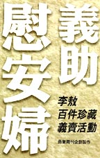

義助慰安婦
—— 李敖百件珍藏義賣活動
藝術品目錄
A 類：中國書畫系列
- 范仲淹卷軸
- 董其昌「小赤壁詩」橫幅
- 冒巢民董小宛夫婦合璧卷真蹟神品
- 查士標山水（梁寒操藏）
- 王文治扇面
- 鐵保五言聯
- 陳鴻壽三札
- 俞樾「花得東風一夜開」詩
- 陸潤庠扇面（附胡金銓贈李敖詩）
- 康有為永夜詩
- 康有為遊泰山詩橫幅
- 陳少白「不是真情懶放懷」詩
- 許世英視察黃河水災詩
- 于右任「不容青史盡成灰」詩
- 于右任扇面
- 莫紀彭寫黃克強詞
- 戴傳賢中央社社史
- 關文彬篆孝經四屏
- 張大千「竹石小鳥」
- 陳子和寫陸放翁集句
- 程十髮「美女羔羊圖」
- 陳谷長「蓮荷圖」與「葡萄圖」（兩件一組）
- 王西京「遠去的足音」
B 類：中國碑拓系列
- 最初拓曹全碑
- 歐陽詢「九成宮醴泉銘」舊拓
- 歐陽詢「皇甫君碑」舊拓
- 鄧石如聯拓片
- 何紹基聯拓片
- 俞樾「楓橋夜泊」拓片
- 康有為七絕拓片
- 于右任「肇和之役」拓片
C 類：中國文物藝品系列
- 漢鏡
- 唐陶馬
- 成親王論墨及程君房造墨（兩件一組）
- 翁同龢硯
- 掐絲硯
- 「同心之言」印和銅印尼盒（兩件一組）
- 極品毫芒扇面
- 極品毫芒牙印
- 毫芒核雕一對
- 飛觴醉月
- 大屌壽星
- 木雕戰馬
- 竹雕麒麟
- 「繡片一對」
- 李成「晴巒蕭寺圖」（印本）（附書）
D 類：佛教文物藝品系列
- 經幢八屏
- 銅佛頭（仿品）
- 胡平觀音版畫
- 魚籃觀音
E 類：攝影裸女系列
- 柯錫杰〈沙漠裸女系列之一〉
- 柯錫杰〈沙漠裸女系列之二〉
- 柯錫杰〈沙漠裸女系列之一〉
- 柯錫杰〈葡萄牙房子〉
- 梁居正攝影「夢──台北淡水河畔」
- 謝春德雞和石（兩件一組）
- 蔡永和「曲牆」
- 李小鏡「裸女」
- 水禾田「北京故宮白玉橋」
- 丁雄泉「裸女」
- 浪花裸女圖
F 類：歐洲印度系列
- 鍍銅金琺瑯六柱庭式鐘
- 英國版刻看表圖
- 歐洲「八卦」鏡
- 貝多芬浮雕
- 古國貝葉春宮圖片
G 類：歐美珍本系列
- 舊小羊皮珍本書
- 珍本限量本《魯拜集》一組（三件一組）
- 舊本洋書一組（兩件一組）
- 柴契爾夫人限量簽名自傳
H 類：台灣文物系列
- 台灣古地契 930 件（契中每一單片以一件計）
- 台灣古眼鏡
- 台灣鴉片煙槍
- 台灣木板版刻
- 台灣木雕雙面象棋
- 台灣龍浮雕
- 台灣高山族木雕彩舟
- 台灣「胸有成竹」竹雕
- 台灣史印聯（鄭成功聯）
- 台灣史拓聯（沈葆楨）
- 台灣史家傳（吳光祿家傳）
- 台灣行政長官公署公報 附早期省政府公報 219 本
- 台灣警察史史料 32 件附地圖一件
- 台灣古框鏡
- 台灣古籤盒
- 楊興生「台灣鄉土」
- 林惺嶽「鷹」
I 類：胡適及李敖紀念品系列
- 胡適贈李敖條幅
- 胡適贈李敖「華嚴著《智慧的燈》」
- 胡適雙橡園詩
- 胡適情詩
- 胡適寫山歌
- 胡適演講稿（69 頁）
- 董作賓寫甲骨文贈李敖（附董玉京寫甲骨文贈李敖）
- 莊嚴贈李敖條幅
- 黃永玉贈李敖「齊桓公問管仲疾」圖
- 李鼎彝與李敖父子檔老鋼筆（兩件一盒）
- 劉辰旦贈李敖「禪」與「筆」（三件一組）
- 李智超「山光澹澹圖」
- 胡因夢贈李敖古玉鐸